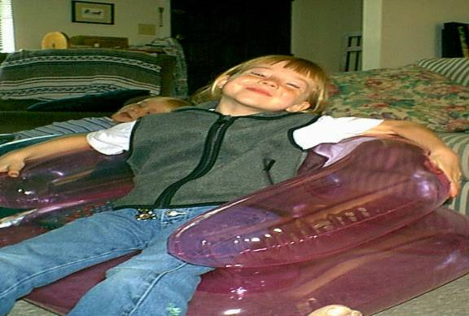

Crush
and steep in 2 gallon at 150 L for 30 minutes:
2.5 lbs of 2-Row
1 lb Black Roasted Barley
1.5 lbs Flaked Barley
Strain
the grain water into your brew pot and sparge with 1 gallon of water for another
30 minutes. Strain again bringing
the total to 3 gallons. Bring
the water to a boil, remove pot from the stove and add :
6 lb of Ultralight Malt Extract
1 oz of Magnum (bittering hop)
Boil
for 40 minutes and then add:
1 tsp. Of Irish moss
Boil
for 20 minutes and then remove from the heat.
Allow the wort to cool and pitch yeast.
1084 Irish
Ferment
in the primary fermentor for 6-7 days or until fermentation slows, then siphon
into a secondary. Bottle when
fermentation is complete with:
4 oz Cup of corn sugar
